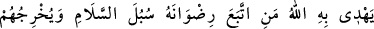
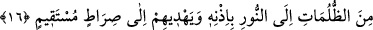

ancak O’nadır.
19- Ey ehl-i kitap! Peygamberlerin arası kesildiği bir sırada size elçimiz geldi.
Gerçekleri size açıklıyor ki (kıyamette): «Bize bir müjdeleyici ve uyarıcı gelmedi.»
demeyesiniz. İşte size müjdeleyici ve uyarıcı geldi. Allah her şeye hakkıyle
kadirdir.
“Ey ehl-i kitap!” Yani ey yahûdî ve hristiyanlar! Buradaki kitaptan maksat, Tevrat ve
İncil’dir. “Rasûlümüz size” Burada Peygamber (s.a.v.)’in Allah tarafından kendisine
izâfe edilmesi, onu şereflendirmek ve ona tâbi olmanın vâcib olduğunu beyan etmek
içindir. “Kitap’tan gizlemekte olduğunuz birçok şeyi açıklamak üzere geldi.” Yani,
Tevrat ve İncil’de bulunduğu halde size gelen ve devamlı olarak gizlediğiniz şeylerin
pek çoğunu maslahatın gerektirdiği şekilde peyderpey size açıklıyor. Halbuki siz o
kitapların ehli ve ona bağlı kimseler olduğunuz halde Tevrat’taki Muhammed (a.s.)’ın
özellikleri ve recm âyeti, İncil’de de Îsâ (a.s.)’ın Ahmed ismindeki peygamber (s.a.v.)’i
müjdesi gibi hakîkatları gizliyorsunuz.
Gizlediklerinizden “bir çoğunu da affediyor.” Yani, dînî bir zarûret yoksa sizi
sıkıntıya sokmamak ve daha fazla rezil olmamanız için açığa çıkarmıyor, haber
vermiyor.
“Gerçekten size Allah’tan bir nur ve apaçık bir kitap geldi.” Nur ve kitaptan maksat,
içerisinde şirk ve şüphe karanlıklarının ortadan kaldırıldığı, insanlara karşı gizlenen
gerçeklerin ızhar edildiği ve apaçık bir i’câzın bulunduğu Kur’ân-ı Kerim’dir.
Nûr ve kitap kelimelerinin birbirlerine atfedilmeleri, isimlerin farklılığının, zâtların
farklılığı yerinde tutulduğu içindir. Ayrıca “nur” ile muradın Rasûlullah (s.a.v.),
“Kitap”tan maksadın da Kur’ân-ı Kerim’in kastedildiği de söylenmiştir.
16- Rızâsını arayanı Allah onunla kurtuluş yollarına götürür ve onları kendi
izniyle karanlıklardan aydınlığa çıkarır, dosdoğru bir yola iletir.
“Rızâsını arayanı Allah onunla” önceki âyette, Allah nûr ve kitap gönderdiğini
bildirdiği halde, bu âyette o kelimelerin yerini tutan zamir tekil olarak getirilmiştir.
Çünkü nur ve kitabın her ikisiyle kasdolunan şey aynıdır veya her ikisinin hükmü birdir.
Çünkü her ikisiyle kasdedilen şey mahlûkatı Hakk’a dâvettir. Bunlardan birisi Allah’ın
tâyin ettiği Rasul, diğeri ise O’nun mûcizesi ve dâvet ettiği hakkı beyândır.
“Kurtuluş yollarına götürür.” Bu manâ, selâm kelimesinin selâmet anlamında olduğu
takdirdedir. Ya da mânâ: Allah Teâlâ’nın yoludur şeklindedir. O yol da insanların